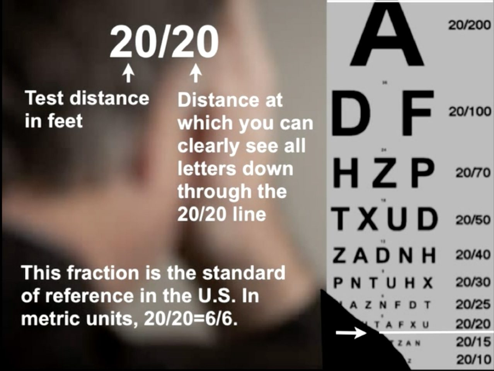

Visual acuity (VA) is a measure of the ability of the eye to distinguish shapes and the details of objects at a given distance.
In 1862, a Dutch Ophthalmologist, Dr. Hermann Snellen, devised this eye chart. He determined that there was a relationship between the sizes of certain letters viewed at certain distances.

The Snellen fractions, 20/20, 20/30, etc., are measures of sharpness of sight. They relate to the ability to identify small letters with high contrast at a specified distance.
In the Snellen fraction 20/20, the first number represents the test distance, 20 feet. The second number represents the distance that the average eye can see the letters on a certain line of the eye chart. So, 20/20 means that the eye being tested can read a certain size letter when it is 20 feet away.
If a patient sees 20/200, the smallest letter that they can see at 20 feet could be seen by a normal eye at 200 feet.